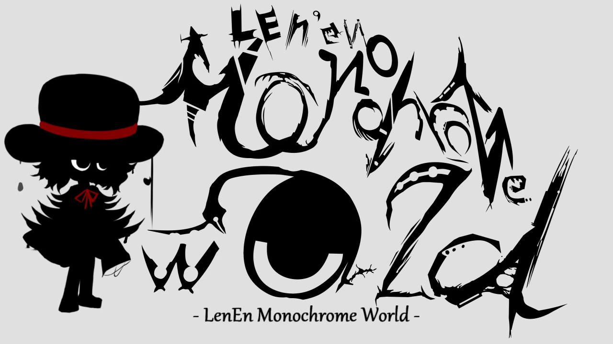
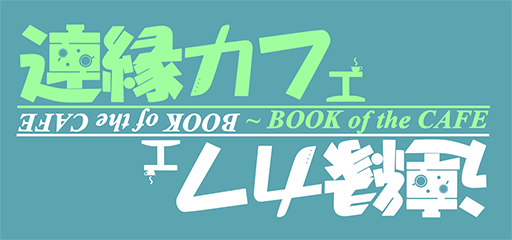
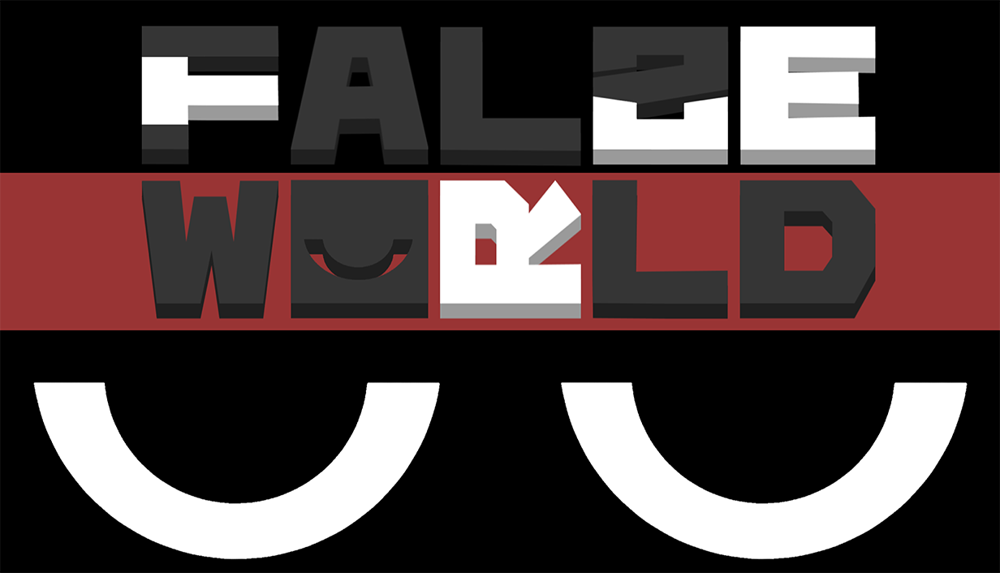

Len'en Project (Проект Лен'эн) - японская серия видеоигр в стиле Shoot’em up, разработанная додзин-кружком "Trick Nostalgie". События игр происходят в выдуманном мире Мугенри, в котором живут люди и монстры - ёкаи. В этот изолированный от всего остального мир невольно попадают главные герои - Ябусамэ Холен и Цубакура Энраку - и их друзья. В ходе истории они постепенно уживаются и привыкают к местным порядкам, а главным героям достаётся пост священников храма, которые должны решать различные инциденты.
Лен'Эн считается довольно сложной игрой в своём жанре, хотя вышедшие давно обновления улучшили баланс сложности, и добавили несколько функций для упрощения игры для новичков в таком жанре ("Light Mode" - режим с большим количеством жизней и ресурсов).
Всего вышло 4 полноценных игры, чуть более подробно про них по ссылкам ниже:
Также в разработке находятся ещё 3 игры, которые, что интересно, не следуют изначальному жанру серии вообще:


